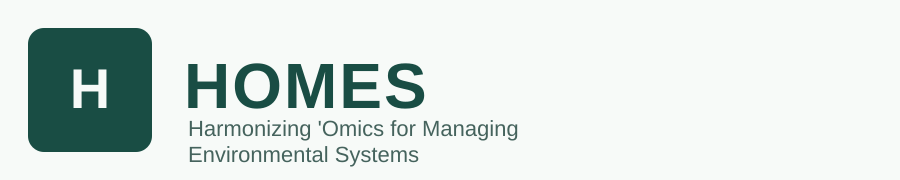

Microbiome analysis for wastewater and environmental samples
Pick what you want to learn, point HOMES at your sequencing files, and get quality checks, taxonomy, abundance tables and a shareable HTML report. No command line needed.

What would you like to find out?
How it works
- Setup – check that Nextflow and Docker are installed (once).
- Samplesheet – list your samples and FASTQ files, or let HOMES find them in a folder.
- New analysis – choose the workflow and options, then press Start.
- Runs – follow progress live.
- Results – open the HTML report and tables.
Recent runs
New analysis
Work through the steps from top to bottom. The command at the end updates as you go.
What do you want to find out?
How were the samples sequenced?
Which data?
Where should it run?
Containers download all the bioinformatics software automatically.
Your data and options
Relative paths are read from the HOMES folder. Every option has a short explanation underneath; defaults work for most data.
Advanced options
Name and save
Expert: extra command-line arguments
Check and start
python3 dashboard/homes_dashboard.py.Samplesheet builder
A samplesheet tells HOMES which FASTQ files belong to which sample. Fill the table, let the dashboard find files in a folder, or paste from Excel.
Save
Saved files are written relative to the HOMES folder unless you give a full path.
Runs
python3 dashboard/homes_dashboard.pyResults
Folders under results/, folders of dashboard runs, and any folder you add here.
python3 dashboard/homes_dashboard.py.
Without it, open report/*.html inside your results folder directly in a browser.Setup check
HOMES needs Docker Desktop (or Singularity on servers), Java 17+ and Nextflow, plus enough disk space and memory.
This page checks this computer. The same check runs in a terminal with python3 dashboard/homes_dashboard.py --check.
Dashboard app
Open the dashboard like a normal program by double-clicking an icon. Run this once in the HOMES folder:
python3 dashboard/homes_dashboard.py --install-app
macOS: creates HOMES Dashboard in your Applications folder (drag it to the Dock). Windows: a shortcut on the Desktop. Linux: an entry in the applications menu. In Chrome or Edge you can also use the Install icon in the address bar.
Install steps
1. Docker (laptop / workstation)
Install Docker Desktop, open it, and wait until it says it is running.
2. Java 17 or newer
Check with java -version. If missing, install e.g. Temurin 17.
3. Nextflow
curl -s https://get.nextflow.io | bash chmod +x nextflow mkdir -p "$HOME/.local/bin" mv nextflow "$HOME/.local/bin/" export PATH="$PATH:$HOME/.local/bin" nextflow info
Restart the dashboard after installing so it picks up the new PATH.
4. Try a test run
Go to New analysis, pick any workflow and choose Built-in test data.